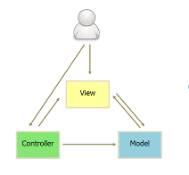
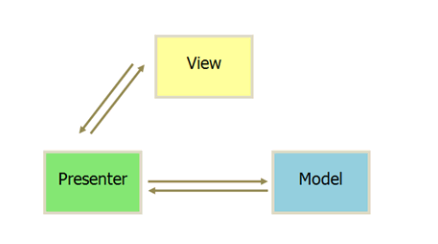
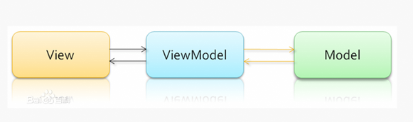

学习目标
1.1初始Vue.js
1.1.1 MVX模式：MVC,MVP,MVVM
1.1.2 Vue.js是什么
1.1.3 对比其他框架
1.2 开发环境搭建
1.2.1 复习webpack，搭建Vue.js开发环境
1.2.2 在Webpack环境下编写一个Vue.js版的todolist
2.1 理解与复习MVVM模式
2.2 搭建Webpack开发环境
2.3 练习todolist代码编写
3.1 模板语法
3.1.1 插值
3.1.2 指令
3.1.3 缩写
3.2 计算属性
3.2.1 基础例子
2.2.2 计算属性 VS Methods
2.2.3 观察 Wathcers
2.2.4 计算属性 VS watched Property
2.2.5 计算 setter
3.3 Class与Style绑定
3.3.1 绑定HTML Class
3.3.2 绑定内联样式
3.4 条件渲染
3.4.1 v-if
3.4.2 template v-if
3.4.3 v-else
3.5 列表渲染
3.5.1 v-for
3.5.2 key
3.5.3 数组更新检测
3.5.4 显示过滤/排序结果
3.6 数据交互
3.6.1 base64
3.6.2 fetch，axios
3.6.3 json-server
4.1 理解复习第三节课讲授的内容
5.1 完成“豆瓣电影”top250首页布局
5.1.1 高效还原设计稿
5.1.2 图标才赢iconfont或base64
5.1.3 样式采用sass/less编写
5.2 完成页面列表数据渲染
5.2.1 应用ajax获取数据
5.2.2 应用第三节课讲授的知识渲染数据
6复习及其拓展
6.2 渐进增强，优雅降级
6.3 AMD/CMD/Commonjs协议的区别
6.4 v-if与v-show的区别
6.5 数据的双向绑定原理
课程大纲及其内容
学习目标
1.1初识Vue.js https://cn.vuejs.org
1.1.1 MVX模式：MVC,MVP,MVVM
MVC框架最早出现在Java领域，然后慢慢在前端开发中也被提到，后来又出现了MVP，以及现在最成熟的MVVM。
MVC全名是Model View Controller，是模型(model)-视图(view)-控制器(controller)的缩写
用一种业务逻辑、数据、界面显示分离的方法组织代码，将业务逻辑聚集到一个部件里面，在改进和个性化定制界面及用户交互的同时，不需要重新编写业务逻辑。
Model(模型)是应用程序中用于处理应用程序数据逻辑的部分。
View(视图)是应用程序中处理数据显示的部分。
Controller(控制器)是应用程序中处理用户交互的部分。
优点：耦合性低、重用性高、生命周期成本低、部署快、可维护性高、有利软件工程化管理
缺点：由于模型和视图要严格的分离，这样也给调试应用程序带来了一定的困难。每个构件在使用之前都需要经过彻底的测试。

MVP是单词Model View Presenter的首字母的缩写，分别表示数据层、视图层、发布层，它是MVC架构的一种演变。作为一种新的模式，MVP与MVC有着一个重大的区别：在MVP中View并不直接使用Model，它们之间的通信是通过Presenter (MVC中的Controller)来进行的，所有的交互都发生在Presenter内部，而在MVC中View会直接从Model中读取数据而不是通过 Controller。
MVP 模式将 Controller 改名为 Presenter，同时改变了通信方向。
各部分之间的通信，都是双向的。
View 与 Model 不发生联系，都通过 Presenter 传递。
View 非常薄，不部署任何业务逻辑，称为”被动视图”（Passive View），即没有任何主动性，而 Presenter非常厚，所有逻辑都部署在那里。

MVVM(Model View ViewModel)是一种基于MVC的设计，开发人员在HTML上写一些Bindings,利用一些指令绑定，就能在Model和ViewModel保持不变的情况下，很方便的将UI设计与业务逻辑分离，从而大大的减少繁琐的DOM操作。
Model代表我们整个webapp所需要的数据模型，一个典型的例子就是用户信息Model,它应该含有(姓名，年龄等属性)。Model含有大量信息，但它并不具有任何行为逻辑，它只是数据，因而它不会影响浏览器如何展示数据。
MVVM中View是具有主动性的，因为它包括了一些数据绑定，事件，和行为，这些都会直接影响Model和ViewModel的。它不但负责保持View自身的行为（展示），而还会将自身的变化同步到ViewModel中。
可以把ViewModel看作一个藏在View后面的好帮手，它把View需要的数据暴露给它，并且赋予View一定的行为能力。

相比前面两种模式，MVVM 模式只是把MVC的Controller和MVP的Presenter 改名为 ViewModel，它采用双向绑定（data-binding）：View的变化会自动更新到ViewModel，ViewModel的变化也会自动同步到View上显示。MVVM代表框架有：Knockout、Ember.js、AngularJS、Vue.js。
1.1.2 Vue.js是什么
Vue (读音 /vjuː/，类似于 view) 是一套用于构建用户界面的渐进式框架。
Vue 被设计为可以自底向上逐层应用
Vue 的核心库只关注视图层，不仅易于上手，还便于与第三方库或既有项目整合。
1.1.3 对比其他框架 https://cn.vuejs.org/v2/guide/comparison.html
结合网站内容自己总结
与react对比方向：
运行时性能：（优化、HTML&CSS）
规模：（向上扩展、向下扩展）
原生渲染
与anglarJs（angular1）对比
复杂性
灵活性和模块化
数据绑定
指令和组件
运行时性能
与angular（angular2）对比
Typescript
运行时性能
体积
灵活性
...
1.2 开发环境搭建
1.2.1 复习webpack，搭建Vue.js开发环境
1.2.1.1 安装需要模块 ---- 遵循的是Commnjs协议
cnpm i vue vue-loader vue-template-compiler -S ----- --save 项目依赖
cnpm i node-sass sass-loader style-loader css-loader -D ------ --save-dev 开发依赖
cnpm i webpack@3 -D 可以压缩js
cnpm i html-webpack-plugin -D 将输出的文件放在index.html文件中的插件
cnpm i babel-core babel-loader babel-preset-es2015 -D 解析js以及jsx语法
cnpm i webpack-dev-server@2 -D 注意版本、热替换
module:{
rules:[
{test:/\.scss$/,loader:"style-loader!css-loader!sass-loader"},
{test:/\.js$/,loader:"babel-loader",query:{presets:["es2015"]}},
{test:/\.vue$/,loader:"vue-loader"}
]
}，
//如果是用vue来构建应用，必须添加一下选项
//因为运行时构建相比完整版缩减了 30% 的体积，希望使用完整版构建，你需要在你的打包工具里配置一个别名
resolve: {
alias: {
'vue$': 'vue/dist/vue.esm.js'
}
}
package.json
{
"devDependencies": {
"babel-core": "^6.26.3",
"babel-loader": "^7.1.4",
"babel-preset-es2015": "^6.24.1",
"css-loader": "^0.28.11",
"html-webpack-plugin": "^3.2.0",
"node-sass": "^4.9.0",
"sass-loader": "^7.0.3",
"style-loader": "^0.21.0",
"webpack": "^3.12.0",
"webpack-dev-server": "^2.11.2"
},
"dependencies": {
"vue": "^2.5.16"
},
"scripts": {
"dev": "webpack-dev-server",
"build": "webpack"
}
}
完整代码
var path = require('path');
var HtmlWebpackPlugin = require('html-webpack-plugin');
var webpack = require('webpack') ;
var baseUrl = './day01/';
module.exports = {
entry: baseUrl + "01test.js",//入口文件的地址
output: { // 输出
path: path.resolve( __dirname, 'dist'),
filename: 'bundle.js'
},
devServer: {//开发环境服务器热替换配置
contentBase: path.join(__dirname, "dist"),
compress: true,
host:"0.0.0.0", //别人可以以ip地址的形式访问你的项目
port: 9000,//指定服务器端口号
},
module: {//加载器，处理特殊的文件
rules: [
{ //处理js文件中引入的scss文件
test: /\.scss$/,
loader: 'style-loader!css-loader!sass-loader' //从右到左解析
},
{
test:/\.js$/,
loader: 'babel-loader',//编译js文件为浏览器可以使用的格式
query: {//处理es6
presets: ['es2015']
}
}
]
},
//如果是用vue来构建应用，必须添加一下选项
//因为运行时构建相比完整版缩减了 30% 的体积，希望使用完整版构建，你需要在你的打包工具里配置一个别名
resolve: {
alias: {
'vue$': 'vue/dist/vue.esm.js'
}
},
plugins: [
new webpack.optimize.UglifyJsPlugin(),//压缩生成的js文件
new HtmlWebpackPlugin({ //会将原来的index.html文件在dist文件处生成并且引入关联的文件
template: './index.html'
})
]
}
1.2.2 在Webpack环境下编写一个Vue.js版的todolist
2.1 理解与复习MVVM模式
2.2 搭建Webpack开发环境
2.3 联系todolist代码编写
3.1 模板语法
文本插值
{{ msg }}
原始HTML ---- 使用v-html指令进行添加数据
<div v-html="msg"></div>
特性：--- 绑定属性 ---- 该属性值是一个变量
test的值可以在初始化的时候定义，通过v-bind：class=‘test’解决
test的值可以在初始化的时候定义，通过v-bind：class=‘test’解决
<div v-bind:class="test"></div>
使用js表达式 ----- 能不使用则不使用 --- 代价太高
{{ msg + '-hello vue' }}
{{ msg.split('').reverse().join('-') }}
就像以前的自定义属性一样，它与标签一起使用，作为该标签的属性
v-html 会将数据值放在当前标签中，类似于进行了js中的innerHTML
v-bind 绑定属性 ---- 该属性值是一个变量
v-bind 绑定属性 ---- 该属性值是一个变量
v-for 循环数据
v-if 条件判断
v-show 显示还是隐藏
v-on 绑定事件
v-model 双向绑定---一般用于表单输入类的控件
....
v-bind:class="test" ------- :class="test"
v-on:click = "test()" ------ @click="test()"
对于任何复杂逻辑，你都应当使用计算属性。
3.2.1 基础例子
2.2.2 计算属性 VS Methods
方法每点击一次就会执行一次
计算属性是关联的原始属性改变之后才会去执行，否则只是引用
特定条件下，计算属性优于方法
2.2.3 观察 Wathcers --- 监听属性---侦听属性
监听属性、侦听属性 watch
监听的是原始属性的变化，比如监听了message的变化
可以得到新值和旧值
能监听很多东西，一般可以和表单结合，也可以监听路由的变化，可以在其内部请求数据
2.2.4 计算属性 VS watched Property
计算属性优于侦听属性，代码量简单了、初始值变少了
2.2.5 计算 setter
当改变该计算属性的值的时候，就相当于调用了该属性的setter
computed: {
fullName: {
// getter
get: function () {
return this.firstName + ' ' + this.lastName
},
// setter
set: function (newValue) {
var names = newValue.split(' ')
this.firstName = names[0]
this.lastName = names[names.length - 1]
}
}
}
3.3 Class与Style绑定 https://cn.vuejs.org/v2/guide/class-and-style.html
对象写法、数组写法
3.3.1 绑定HTML Class
3.3.2 绑定内联样式 ---- 自己完成
class语法
对象写法
使用绑定属性，绑定一个对象，key值为css选择器名称，value值为变量（一般为boolean）
可以使用三木运算符进行替换
数组写法
使用绑定属性，初始化时給給选择器active和err取了别名为activeClass和errClass，随后在页面中通过数组调用
3.4.1 v-if
3.4.2 template v-if
3.4.3 v-else
v-if 是“真正”的条件渲染，因为它会确保在切换过程中条件块内的事件监听器和子组件适当地被销毁和重建。
v-if 也是惰性的：如果在初始渲染时条件为假，则什么也不做——直到条件第一次变为真时，才会开始渲染条件块。
相比之下，v-show 就简单得多——不管初始条件是什么，元素总是会被渲染，并且只是简单地基于 CSS 进行切换。
一般来说，v-if 有更高的切换开销，而 v-show 有更高的初始渲染开销。因此，如果需要非常频繁地切换，则使用 v-show 较好；如果在运行时条件很少改变，则使用 v-if 较好。
3.5.1 v-for
3.5.2 key---- 一把锁一把钥匙，钥匙和锁都贴标签
3.5.3 数组更新检测
Vue 包含一组观察数组的变异方法，所以它们也将会触发视图更新
- push()
- pop()
- shift()
- unshift()
- splice()
- sort()
- reverse()
3.5.4 显示过滤/排序结果
list1994: function () {
console.log( this.list )
return this.list.filter( function ( item ) {
return item.year == 1994 // 此处为true还是false
})
}
3.6 数据交互
3.6.1 base64、md5
cnpm install --save js-base64
cnpm install --save js-md5
import md5 from 'js-md5';
let Base64 = require('js-base64').Base64;
Base64.encode('dankogai'); // ZGFua29nYWk=
Base64.encode('小飼弾'); // 5bCP6aO85by+
Base64.decode('ZGFua29nYWk='); // dankogai
Base64.decode('5bCP6aO85by+'); // 小飼弾
md5(''); // d41d8cd98f00b204e9800998ecf8427e
md5.hex(''); // d41d8cd98f00b204e9800998ecf8427e
md5.array(''); // [212, 29, 140, 217, 143, 0, 178, 4, 233, 128, 9, 152, 236, 248, 66, 126]
md5.digest(''); // [212, 29, 140, 217, 143, 0, 178, 4, 233, 128, 9, 152, 236, 248, 66, 126]
md5.arrayBuffer(''); // ArrayBuffer
md5.buffer(''); // ArrayBuffer, deprecated, This maybe confuse with Buffer in node.js. Please use arrayBuffer instead.
3.6.2 fetch，axios， ajax
routes全部负责到api
app.js引入
//接口模块
var apiIndex = require('./api/index');
app.all('*', function(req, res, next) {
res.header("Access-Control-Allow-Origin", "*");
res.header('Access-Control-Allow-Methods', 'PUT, GET, POST, DELETE, OPTIONS');
res.header("Access-Control-Allow-Headers", "X-Requested-With");
res.header('Access-Control-Allow-Headers', 'Content-Type');
next();
});
// 注册路由 -- 必不可少
app.use('/', index);
app.use('/api', apiIndex);
在api中将原先的res.render全部更换为res.send,只需要结果不需要以前的参数
vue-resource https://www.npmjs.com/package/vue-resource
getData () {
.then( this.getDataSuccess, this.getDataFail)
},
getDataSuccess ( res ) {
console.log( res.data )
this.list = res.data;
},
getDataFail ( err ) {
console.log( err )
}
Axios 是一个基于 promise 的 HTTP 库，可以用在浏览器和 node.js 中。
- 从浏览器中创建 XMLHttpRequests
- 从 node.js 创建 http 请求
- 支持 Promise API
- 拦截请求和响应
- 转换请求数据和响应数据
- 取消请求
- 自动转换 JSON 数据
- 客户端支持防御 XSRF
methods: {
getData () {
.then( this.getDataSuccess )
.catch( this.getDataFail )
},
getDataSuccess ( res ) {
console.log( res.data )
this.list = res.data;
},
getDataFail ( err ) {
console.log( err )
}
},
可以一次性请求多个接口，类似于nodejs异步编程中的并行无关联parallel
getMovieData () {
},
getCastsData () {
},
getData(){
axios.all([this.getMovieData(), this.getCastsData()])
.then(axios.spread(function (movie, casts) {
// Both requests are now complete
console.log("movie", movie)
console.log("casts", casts)
}));
}
无需引入，可以直接使用
return response.json();
}).then(function(data) {
console.log(data);
}).catch(function(e) {
console.log("Oops, error");
});
4.1 理解复习第三节课讲授的内容
5.1 完成“豆瓣电影”top250首页布局
5.1.1 高效还原设计稿
5.1.2 图标才赢iconfont或base64
5.1.3 样式采用sass/less编写
5.2 完成页面列表数据渲染
5.2.1 应用ajax获取数据
5.2.2 应用第三节课讲授的知识渲染数据